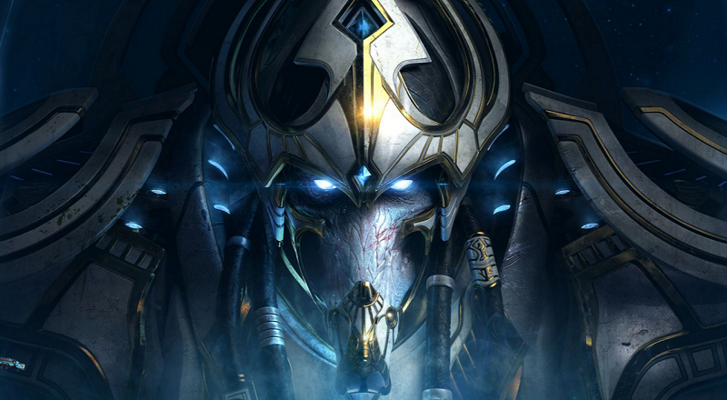

- Artanis
- Amon
- Alarak
Artanis

Today we retake our homeworld. And with it, our legacy!!
Countless lives lost! There will be more bloodshed in this invasion. More friends fallen. Because we cling to an ideal that may have passed.
My will is not so easily broken, Amon. The firstborn shall fear you no longer!!
My brethren, hear me! For there is little time left.
All that remains of our race, our civilization, are those that stand beside you now, and those corrupted on the surface below.
Our kind once stood as stewards of a galaxy full of promise. In our pride and division, we failed that sacred charge and fell to ruin.
The Khala, designed to bring unity, ultimately only aided those divisions. Its hope was a lie.
Today, that lie must come to its end, and with it, our prejudice and arrogance must become a thing of the past.
For we now fight in the belief that our kind has not seen its end.
That we protoss can stand bound by a belief in unity.
And that we protoss will forge a great and mighty new civilization!
Trust each other in the fight ahead. Strike as one will!
Let our last stand burn memory so bright that we will be known throughout eternity!